| 日付 | 2012年8月4日（土） - 2012年8月7日（火） | ||||
|---|---|---|---|---|---|
| 山域 | 北アルプス、妙高周辺 | ||||
| メンバー | 家族（妻、長女・1歳） | ||||
| 山行形態 | 子連れ3泊4日ホテル泊 | ||||
| アクセス | 車 | ||||
| ルート (Map1) |
|
2日目
今日はどの山に登るか結構迷ったが、せっかく北アルプスまで来たので、
日帰りでもいいから北アルプスの山に登ろうということになった。
場所はもともと予定していた唐松岳。ここなら十分日帰り登山が可能だ。
宿では6時から朝食を用意してもらえたおかげで、7時には駐車場に到着。
それでも車は結構停まっている。昨日から停めている車が多いのかもしれない。
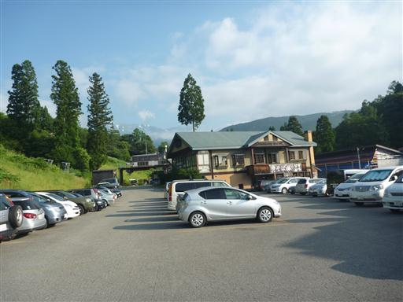
今日もリフトに乗って標高を稼ぐ。
昨日で慣れたのか子供は比較的大人しく乗ってくれた。
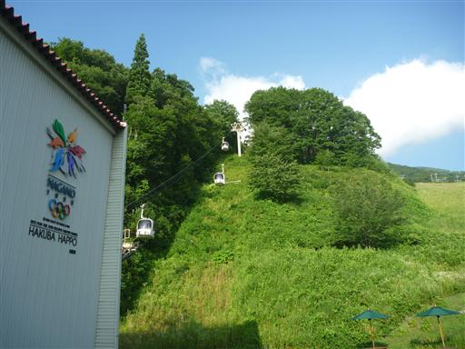
リフト駅近くにカライトソウの群落ができている。なかなか派手な花だ。
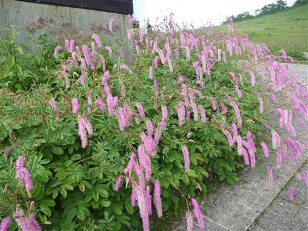
リフトを乗り換える。朝は下界から白馬岳が良く見えていたが、この辺りは雲に覆われている。
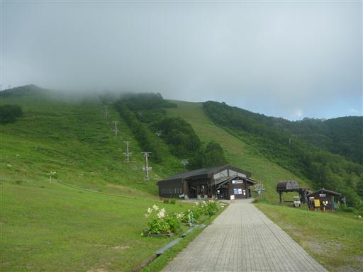
リフトに乗って上がっていくと雲の上に出て青空が現れる。
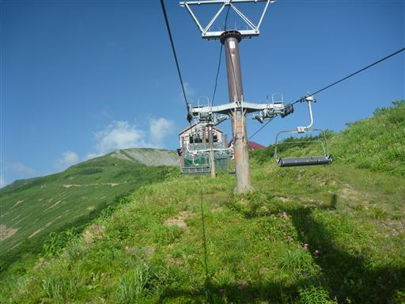
リフトを降りる。ここはもう完全に雲の上の世界だ。標高1820m。
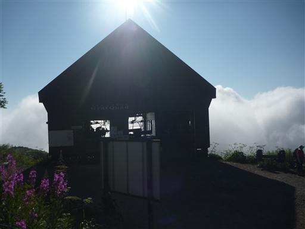
まず目に飛び込んでくるのが白馬三山。
見事な快晴、素晴らしい展望だ。
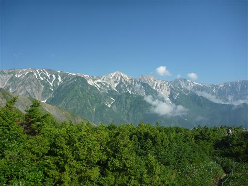
八方尾根を歩き始める。すでに森林限界を超えているため展望は非常に良い。
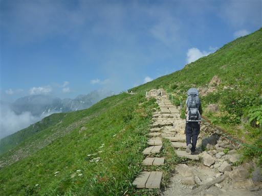
左手にはどっしりとした五竜岳が見えている。
明日の天気が良ければあの山まで行く予定だったのだが…
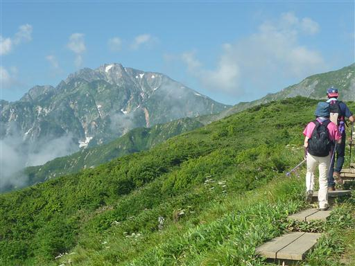
ハクサンタイゲキ。
図鑑で調べると見た目はノウルシとそっくりだったが、生育条件が異なっていたためネットで調べてみた。
ハクサンタイゲキは手持ちの図鑑では載っていなかった。植物の同定はなかなか難しい。
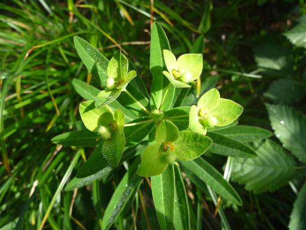
ムシトリスミレ。あまり良い状態で咲いていないが、後ろに標識があったため間違いない。
食虫植物の珍しいスミレだ。
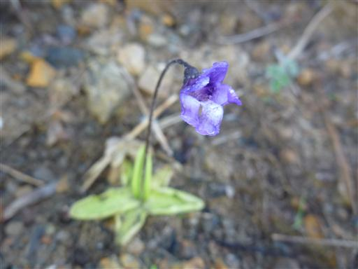
高山植物を眺めながら緩やかな尾根を快調に登っていく。
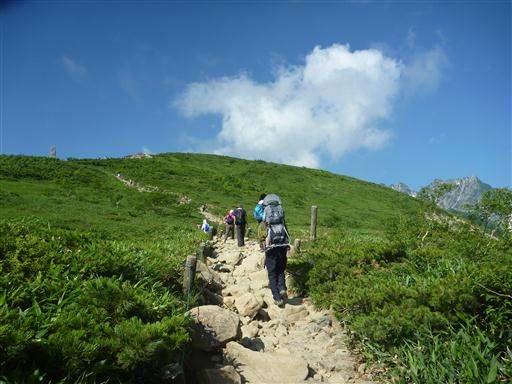
草地の中に細い木が一方だけヒョロッと立っている。
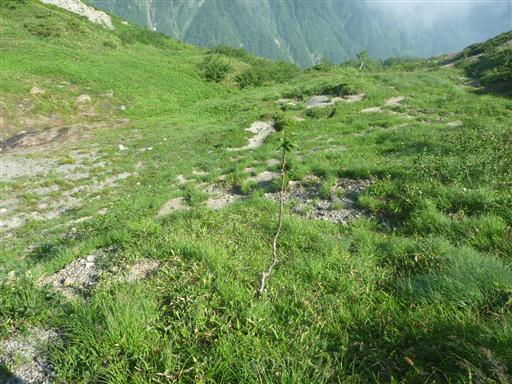
ミヤマアズマギク。
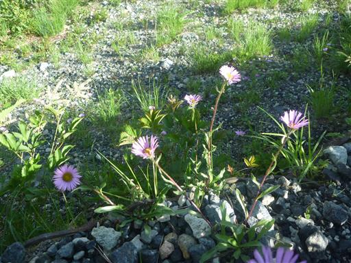
八方池に到着。背景は不帰嶮だ。
池周辺は登山者や観光客で賑わっている。
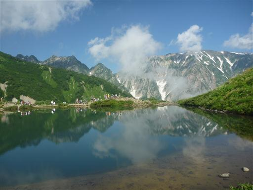
池の近くにクガイソウの大群落がある。
こうも数が多いと少し気持ち悪い。
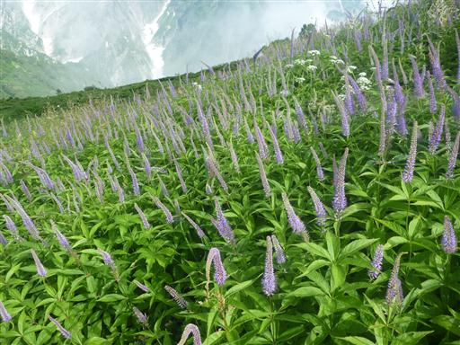
八方池からすこし登ると樹林帯の中に入る。
視界が悪くなったからか、途端に人の数が少なくなったように感じる。
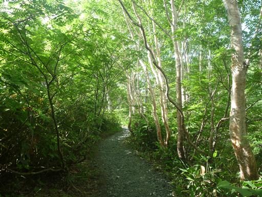
扇雪渓に到着。涼しいのでここで一休み。
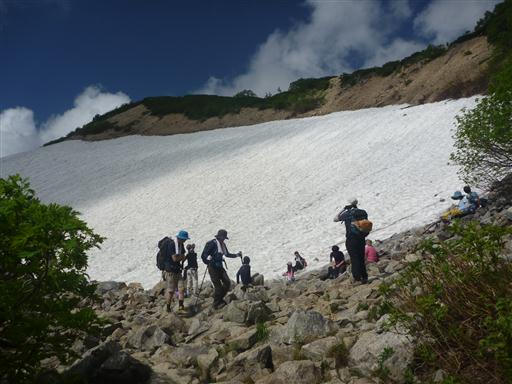
雪渓で一休みしたら唐松岳に向けて歩き出す。
辺りにはチングルマが群生している。
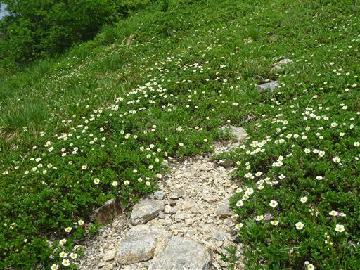
丸山ケルンに到着。大量の雲がやってきて、あっという間に視界を隠してしまった。

タテヤマリンドウとは少し違うような気がするが、ミヤマリンドウだろうか？
非常に美しい青色だ。
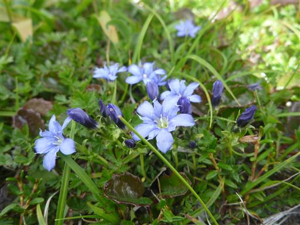
登山道は緩やかな尾根道から急斜面のトラバース道になる。
ここまで来ると唐松小屋まではすぐだ。
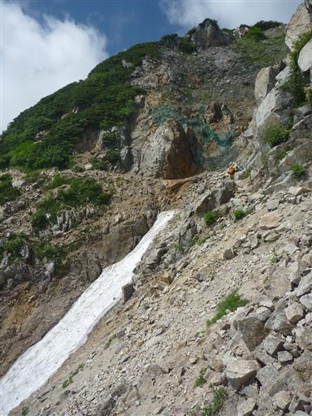
ガレた急斜面にも多くの花々が咲いている。
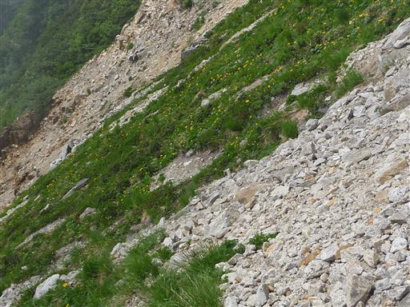
歩くこと3時間、ようやく唐松小屋に到着する。
子連れで来た初めての北アルプスの主稜線。展望は……
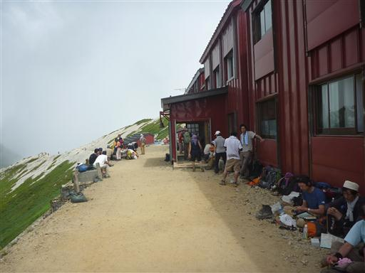
何とかあった。雲に覆われて多くの山は見えないが立山連峰が顔を出している。
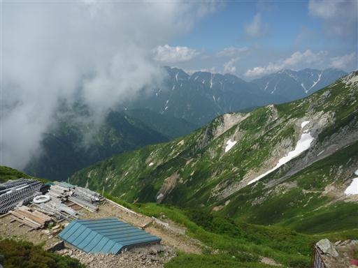
そして目指すべき唐松岳の山頂もなんとか見えている。
山頂は目と鼻の先なので小屋では休まずそのまま山頂を目指す。
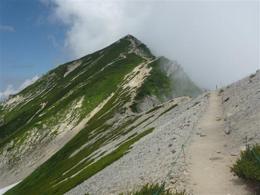
わずかな登りで唐松岳山頂に到着する。標高2696m。
家族で初の北アルプス登頂だ。
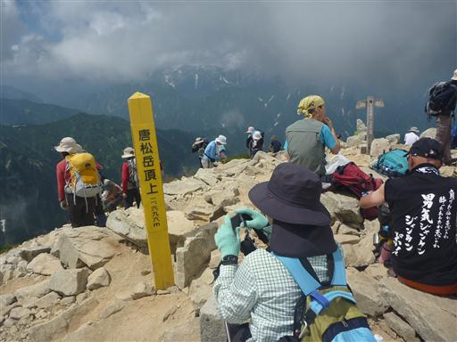
南方には五竜岳が大きい。雲に隠れたり、また現れたりを繰り返している。
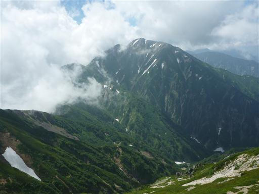
こちらは立山連峰の眺め。
雲は取れそうで取れず、剱岳を望むことは残念ながらできなかった。
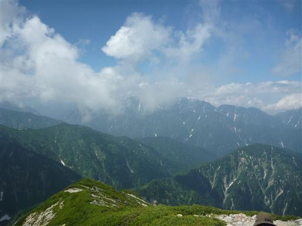
昼食をとってのんびりと展望を楽しんだら下山を開始することにする。
今後当分、北アルプスの山に来ることはないだろう。名残惜しいが下山の時間だ。
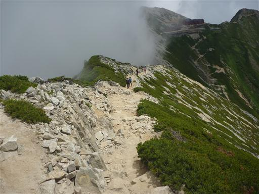
眼下には深い谷が広がっている。
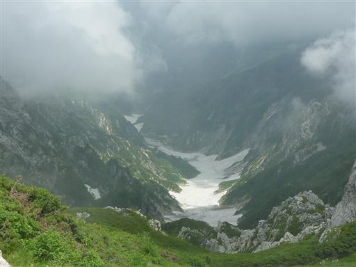
山頂では見えなかったが不帰嶮が雲の隙間からわずかに見える。
急峻な崖が連なる素晴らしい登山道だ。
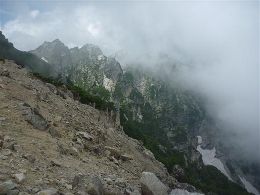
あとは元来た道を戻るのみ。八方尾根を延々と下ると雲の下に出てきて視界が広がる。
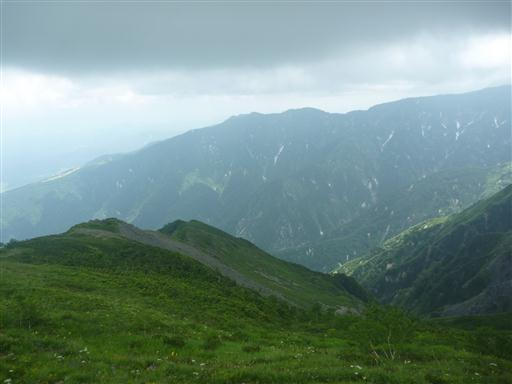
帰りは八方池に寄らずに第三ケルンを経由する。
ほとんどの人は八方池に行くため、こちらは比較的人影が少ない。
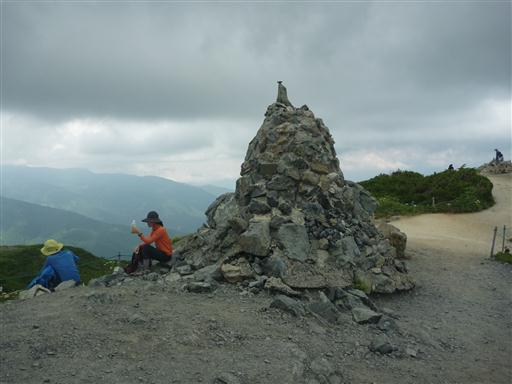
眼下には八方池が見えている。背景の白馬岳は完全に雲の中だ。
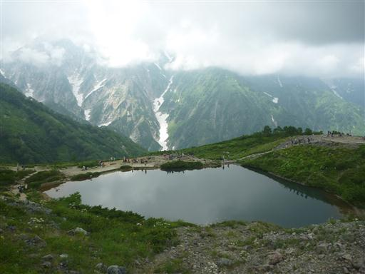
あとは八方尾根の中腹にあるリフト乗り場まで下るのみだ。
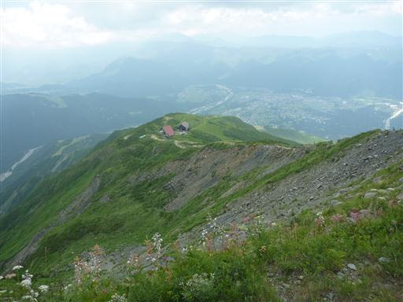
リフト乗り場に到着。雨に降られることなく無事下山できた。
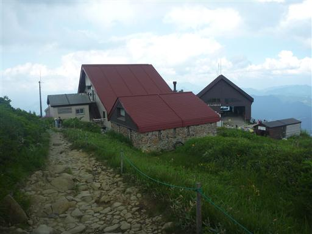
リフトを降りたら一路、戸隠高原を目指す。
今日は「森の宿めるへん」という宿をとってある。ここで2泊する予定だ。
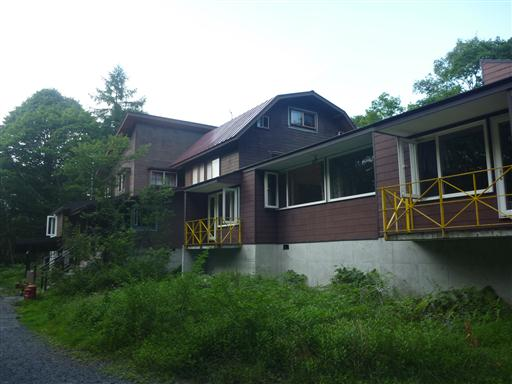
部屋内は質素だが広々としていてロフトまでついている。
ロフトへの梯子が気に入ったのか、子供は何度も登っている（自分で降りることはできない…）。
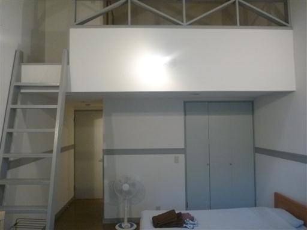